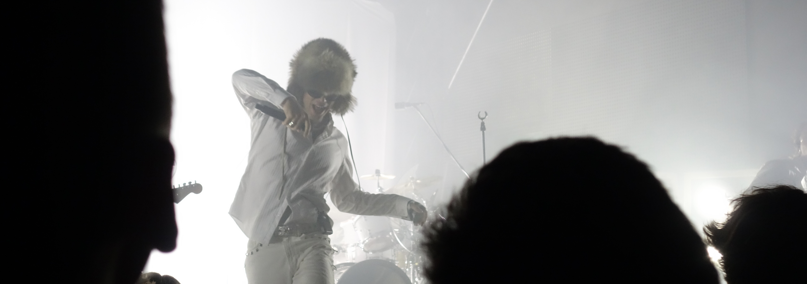
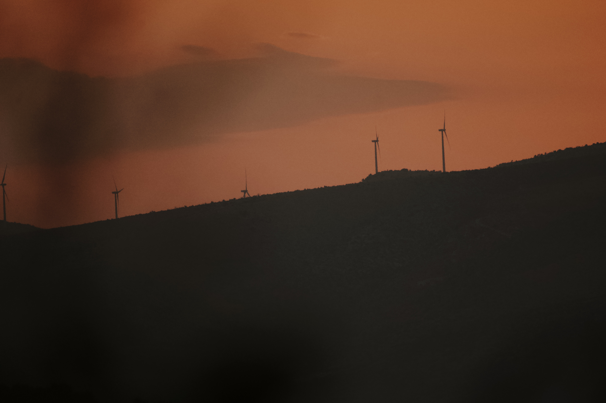
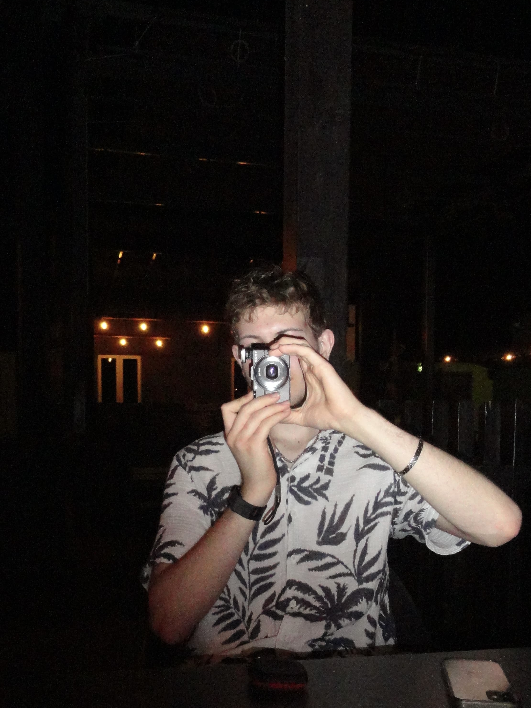

FOTOGRAFIE AUS NORDRHEIN-WESTFALEN
Draußen unterwegs.
Mit der Kamera dabei.
Ich bin Torben. Hier zeige ich ein paar Fotos von unterwegs – aus der Natur, von Reisen und von Orten, an denen ich gern länger stehen bleibe.
 TITELBILD
TITELBILD
AUS MEINER KAMERA
Ein paar Lieblingsbilder
Natur, Landschaft und Reiseeindrücke.




Die Bilddateien kommen in den Ordner bilder. Dateinamen und Anleitung stehen in der README.

ÜBER MICH
Hi, ich bin Torben.
Ich fotografiere in meiner Freizeit am liebsten draußen. Oft sind es Landschaften, kleine Details oder Eindrücke von Reisen, die ich gern festhalte.
Auf dieser Seite sammle ich Bilder, die mir besonders gefallen. Mehr davon gibt’s auch auf Instagram.
@torben_photo auf Instagram ↗WEITERE FOTOS
Die Galerie
Hier geht’s zu weiteren Bildern in Google Drive.
KONTAKT
Schreib mir gern.
Du erreichst mich per Mail oder über Instagram.